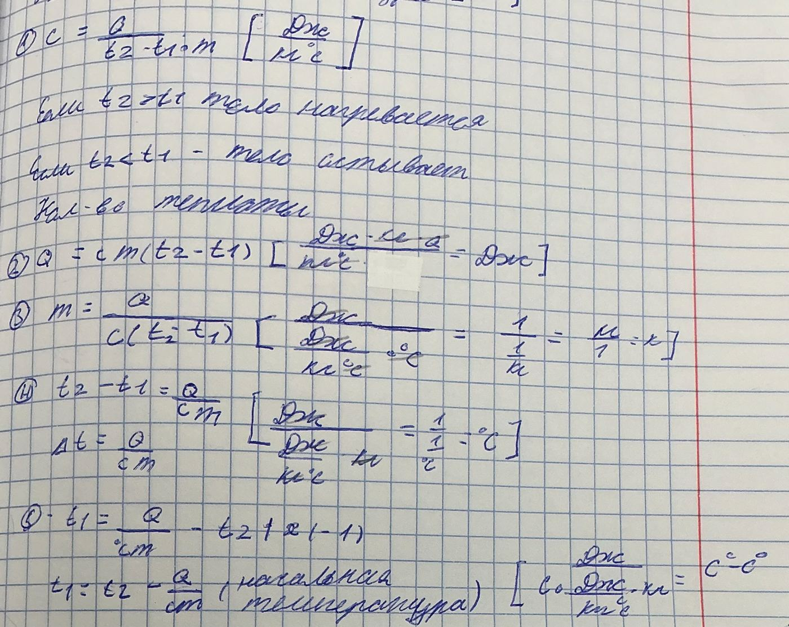

Одна формула — шесть ответов
Запомни основу, затем вырази нужную величину.
Что нужно найти?
Нажми на величину: увидишь формулу и короткий ход решения.
Как меняется температура?
Пояснение к записи: при охлаждении Q = cm(t₂ − t₁) отрицательно. Если спрашивают, сколько теплоты отдано, берут положительное значение |Q|.
Посмотреть исходный конспект

Формулы и обозначения взяты из приложенного фото. Запись для t₂ и пояснение о знаке Q выведены из основной формулы.
Проверь, как работает формула
Меняй значения и сразу смотри результат.
Наблюдай результат
Выведи формулу
Выбери величину, затем правильное выражение. Можно проверить все шесть формул.
Сократи единицы
Определи единицу результата, если подставить единицы величин в формулу.
Найди неверный шаг
В каждом решении одна ошибка. Нажми на строку с ошибкой.
Один вопрос за раз
После ответа сразу увидишь объяснение. Следующий вопрос — по твоей команде.
Проверь себя без подсказок
12 заданий: формулы, единицы, понимание, расчёт и один устный ответ. Результат в конце.
Что уже получается
Результаты сохраняются только на этом устройстве.